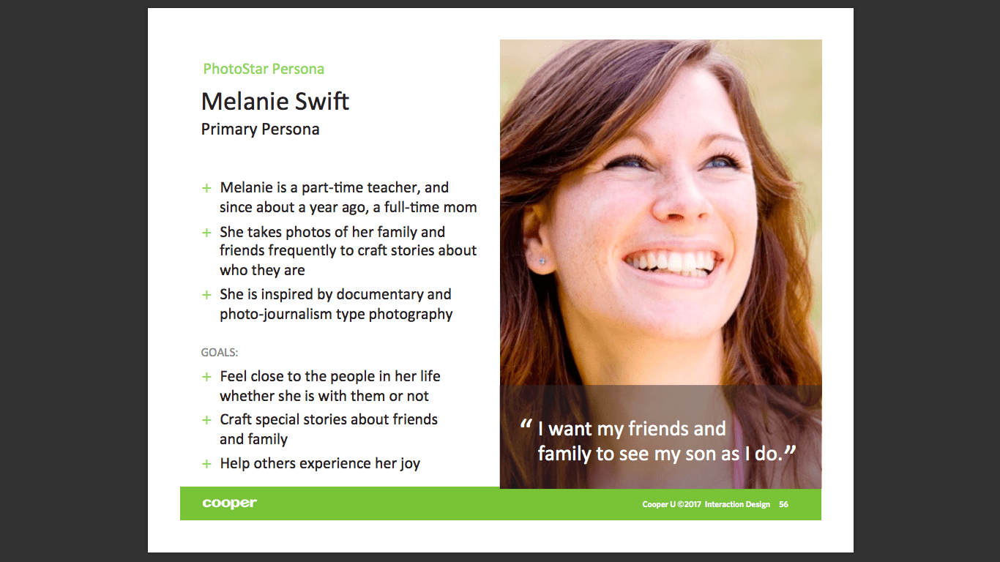

Photostar
Photo App - Interaction - Cooper Training
Problem
Create a photography app that helps amateur photographers make the transition to DSL-R style photography equipment, therefore boosting sales of the Photostar products.
Process
This design challenge was the core of the Interaction Design Training I completed with Cooper Professional Education. Our process included reviewing user interviews, doing an ecosystem map, creating continua, reviewing a persona, creating scenarios, and designing a solution.
Results
Working with other designers, we created a comprehensive and innovative design solution for the problem presented in the training. At the end, we did a mock stakeholder presentation where we described our solution and answered questions about the design.

Photostar Design Challenge
Provide a mobile concept that enables users to learn photography skills using their camera phone.
Encourage users to improve and develop their skills as they use the app. Note that the company has separate products targeting professional photographers.
Design for adults between 25-50 years old that consider themselves photography enthusiasts (but not professional photographers.
Stakeholder Interview Review
Stakeholder interviews were created by the people doing the training and I reviewed them with my group to identify their goals for the application.
The interviews revealed that the company wanted to help amateurs bridge the gap into buying the company's photography equipment so as to expand their potential customer base.
User Research
We were given six user interviews to review in our group and discuss the different concerns and goals of each individual and how that could impact the design of the Photostar application. Every user had a different relationship with photography and different preferences for why they took photos.
Ecosystem Mapping
Before diving into the details of the user research and creating personas, we zoomed out to do a brain dump on the ecosystem for the whole project. We identified actors (any people who may play a role), activities (potential things someone may want to do with a photo app), props (what equipment they would use to do these things), places (where they would take photos), trends (popular things on the market that should be considered), and desired outcomes for both stakeholders and users.
Synthesizing User Research
In a brainstorm session with our groups, we synthesized information from the user research we read through. We identified the capability level of the users, behaviors, attitudes, experience goals, and emotional goals.
Creating Continua
We wrote down contrasts between the different users based on the information gotten in the previous steps and plotted each user that was interviewed on a continuum. Using these points, we identified clusters on the continua of similar responses with multiple users to create distinct personas.

Scenarios
In our groups, we discussed a variety of scenarios where Melanie might benefit from the use of the Photostar application. From capturing her son sliding down a slide in a low-light situation to wanting to capture a father-son bonding moment on the fly, we tried to come up with as many situations as we could to anticipate Melanie's Needs.
Empathy Mapping
Persona: Melanie Swift
Do: Melanie tries to capture a fleeting moment in a low light situation.
Think: "Wow! I love how quick it was to make changes in the app so that I didn't miss that moment."
Feel: Relieved she didn't miss an opportunity, happy that she got a good photo, excited to use the app more in other situations
Storyboard Scenario:
Pt. 1 - Capturing and Sharing
Melanie notices her son and a boy starting their friendship and quickly pulls up the Photostar application to capture the moment. She easily aligns the photo using the rules of 3 grid on the screen. The camera app automatically captures in a burst shot when it detects motion to make sure it gets the shot. Melanie is pleasantly surprised by how easy it was and is excited when she sees Photostar offers tips on how to improve her photos. She decides to check them out later, as she wants to stay present with her son at the park.
Later, when Melanie gets home, she notices a notification reminding her to review her new photos. She is happy that Photostar has helped her remember that she wanted to go through these photos, as she likes to keep her photos organized and wants to post one of them on social media. She scrolls through and gets feedback on the screen on the quality of the photo. She feels rewarded when she sees that Photostar has identified a quality photo and decides to post it on social media using the sharing feature.
Storyboard Scenario:
Pt. 2 - Practicing Photography in VR
She soon gets a lot of hearts and likes from social media and feels proud of her improving photography skills and satisfied with Photostar. She decides to check out the Learning Lab, an area of the app that allows her to practice photography skills in a VR environment. She opens the interface and chooses a lesson about night time photography, where she sees a generated scene where she can control the same camera controls she would use in real life. Photostar gives her feedback on her photo and Melanie feels excited about practicing her new photography skills in the comfort of her own home.
Results
After giving our presentation on our solution, people were very positive in general about the application idea. The major feedback for change that people suggested was making the Learning Lab a separate application, because it got buried in the Photostar application and was potentially an interesting idea on it's own. Additionally, in terms of the presentation, people felt confused that we included a site map, but we felt it was a good way to illustrate the interaction of the solution.